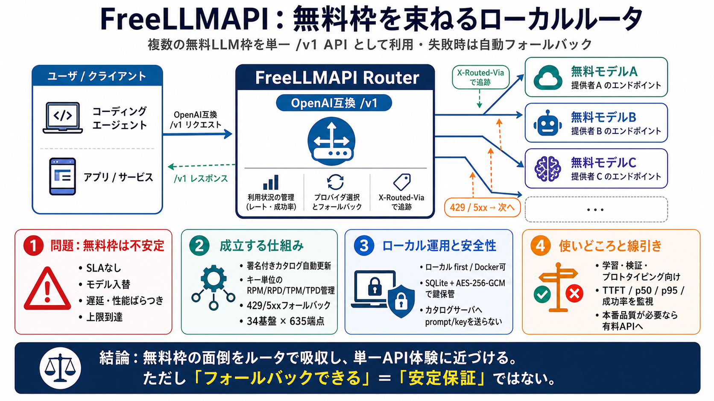

FreeLLMAPI: 343 free models, one endpoint · neu Intelligence
Skip to content WorkCapabilitiesProcessBook a call → ContactPrivacyTerms AI · developer infrastructureOpen source2026…

無料枠を束ねるルータ
FreeLLMAPI は、複数の無料 LLM 枠（free tier）を統合して、OpenAI互換の単一API（例：/v1）として使えるローカル運用ルータです。
各リクエストで“その時点で条件を満たす無料モデル”を選び、429/5xx ならフォールバックします（fallback / フォールバック） 。
無料は安定しない
無料枠は提供者都合で変わり、モデルの入れ替え・性能/遅延のばらつき・上限到達が起きます。
そのため“無料枠の寄せ集め”は便利でも、企業向け品質保証（SLA）や再現性を期待しにくい、というトレードオフがあります。
透過的なルーティング
FreeLLMAPI は、プロバイダごとに違うSDK・失敗条件を吸収し、毎回“最適な無料モデル”へルーティングします。
どの送信先になったかは X-Routed-Via ヘッダで確認できる設計です。
統合規模
FreeLLMAPI は 34 の無料LLMプロバイダと、計 635 の無料エンドポイントを統合し、OpenAI互換で利用できるようにします。
Cursor / Aider / Claude Code / Codex CLI など、コーディングエージェント接続のセットアップ支援も含まれます。
モデルカタログ追従
ルータはモデルカタログを署名付きフィードから自動更新し、無料枠の“入れ替わり”に追従します。
（遅延 / 反映差）を前提に、期待値と運用監視を設計する必要があります。
フォールバック設計
リクエストが 429（レート超過）または 5xx（一時エラー）になったら、設定されたフォールバックチェーンの次のモデルへ切り替えます。
キー単位で節約
キーごとの利用量（RPM/RPD/TPM/TPD）をカウントして、各無料枠の上限を超えないよう運用します。
フォールバックは手段で、レート上限管理が前提条件です。
そのまま接続
OpenAI互換だけでなく、Anthropic/Gemini/Ollama 方面の互換面を用意し、既存クライアントやエージェントを接続しやすくします。
“ルータの差”を利用者のプロンプト/クライアント側で吸収しない方針です。
ローカル運用
基本はローカルファーストです。デスクトップアプリではルータとダッシュボードをローカルで動かします。
クラウドの単一SaaSとして“預ける”設計ではない点が前面にあります。
鍵の取り扱い
鍵は暗号化保管（SQLite + AES-256-GCM）され、カタログサーバへプロンプトやキーを渡さない方針が明記されています。
どこへ投げた？
実際の送信先（platform/model）は、各レスポンスに付与される X-Routed-Via ヘッダで追跡できます。
“無料枠の体験”を意思決定に使うなら、観測に基づく確認が必要です。
安定は保証されない
無料枠は提供者都合で変わり、READMEでも“個人の実験・学習向け”としてプロダクション相当を避けるべき旨が述べられています。
“フォールバックできる”は“安定する”と同義ではありません。
仕事利用の線引き
仕事で使う場合は、コスト・遅延・再現性・規約順守まで含めた品質保証が必要です。
また、プロキシ経由の利用は各プロバイダの ToS 解釈に依存し得ます。
要点まとめ
FreeLLMAPI の価値は、無料枠で起きる面倒（レート制限・失敗・モデル差）を“ルータ構造”で吸収し、単一API体験に寄せることです。
Japanese gloss: ルータ＝転送装置（ルーティングして最適先へ流す）/ フォールバック＝次の手段へ切替え。
Skip to content WorkCapabilitiesProcessBook a call → ContactPrivacyTerms AI · developer infrastructureOpen source2026…
FreeLLMAPI by tashfeenahmed is an OpenAI-compatible proxy that combines free-tier access from 16 LLM providers into one …
FreeLLMAPI is an OpenAI-compatible proxy that aggregates free-tier API keys from multiple AI providers into one unified …
How each provider's ToS views a personal, single-user proxy — reviewed provider by provider in May 2026 — is in docs/arc…
And the free-tier landscape shifts weekly: providers launch models, retire them, and change quotas without notice. FreeL…